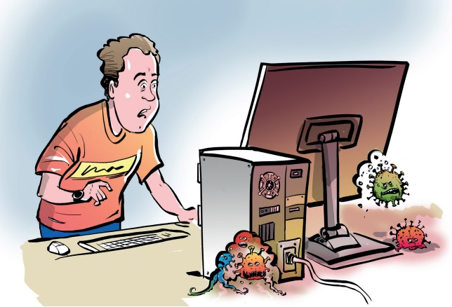

Компьютерные вирусы
назад
Компьютерный вирус
- это разновидность компьютерных программ, отличительной особенностью которой является способность к размножению (копированию). В дополнение к этому, вирусы могут повредить или полностью уничтожить все файлы и данные, подконтрольные пользователю, от имени которого была запущена заражённая программа, а также повредить или даже уничтожить операционную систему со всеми файлами в целом. В большинстве случаев распространяются вирусы через интернет.
Вирусы имеют следующие вредоносные функции:
1. Мешают нормальной работе устройства, замедляют его, а в некоторых случаях повреждают
даже операционную систему таким образом, что без тщательного ремонта или восстановления,
пользоваться устройством становится невозможно.
2. Крадут персональные данные пользователя: выгружают данные из системы, включая логины
и пароли, платежные данные, личные файлы и многое другое.
3. Передают злоумышленникам все, что пользователь печатает на своей клавиатуре
(«клавиатурные шпионы»).
4. Блокируют устройство с целью шантажа: полностью блокируют работу на устройстве, а для
разблокировки требуют перевести деньги на указанный счет.
5. Используют ваш компьютер для майнинга – добычи криптовалюты. Такие программы,
проникнув на ваше устройство, используют его мощность для того, чтобы добывать
криптовалюту. Любые программы-майнеры, как вирусные, так и нет, очень сильно нагружают
компьютер. Последствием их работы является значительное падение скорости работы
устройства, перегрев и даже выход из строя отдельных деталей и, в конечном итоге, всего
устройства.

Меры предосторожности,которые помогут избежать заражения устройства вирусами:
1.Установите Антивирус. Даже бесплатные программы способны отслеживать работу вашего
устройства и вовремя удалять вирусные программы в случае их появления.
2. Не скачивайте файлы из ненадежных источников или сомнительных веб-сайтов. Это может
привести к установке вредоносного программного обеспечения на ваше устройство.
3. Регулярно делайте резервное копирование всех своих важных данных, чтобы в случае
вирусной атаки вы их не потеряли.
4. Не открывайте письма, присланные с незнакомых адресов. Не скачивайте и не открывайте
файлы из таких писем или из сообщений, которые прислали вам незнакомые пользователи.
5. Вовремя устанавливайте обновления системы на компьютере или телефоне, обновления
антивирусной программы, если она у вас установлена. Также обновляйте браузер, которым
пользуетесь.